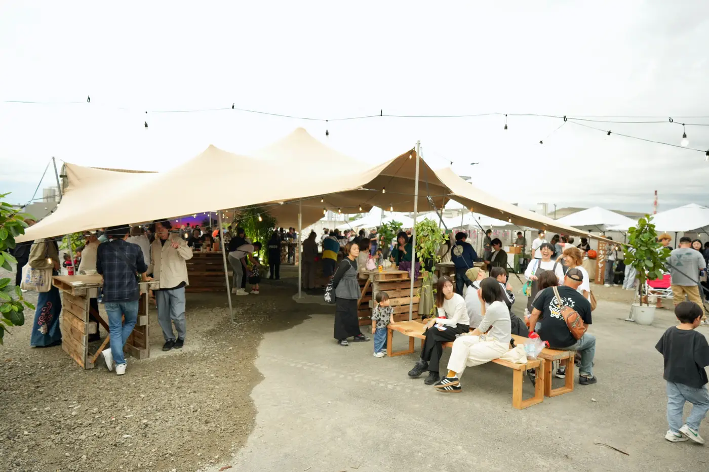
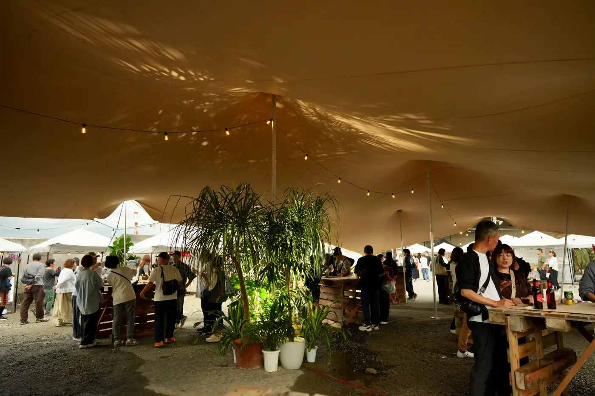
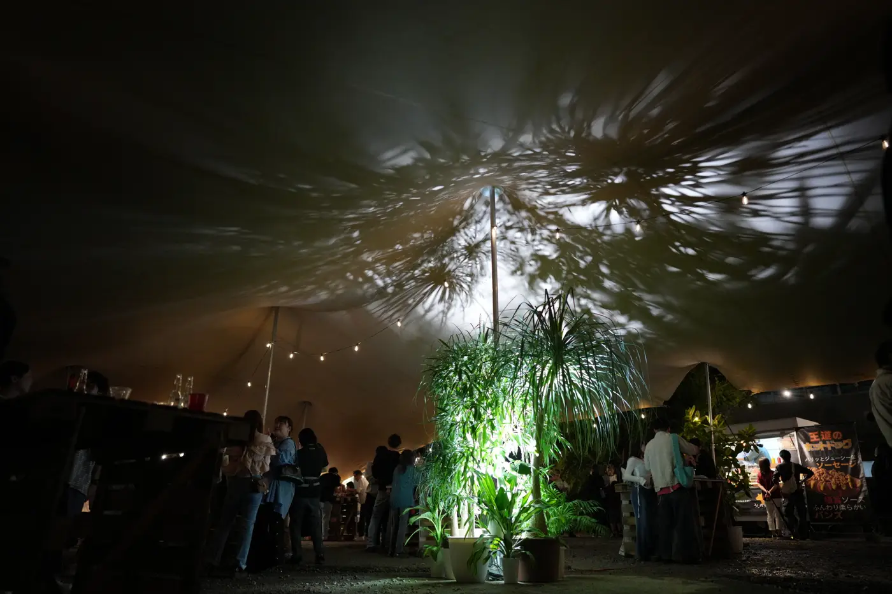
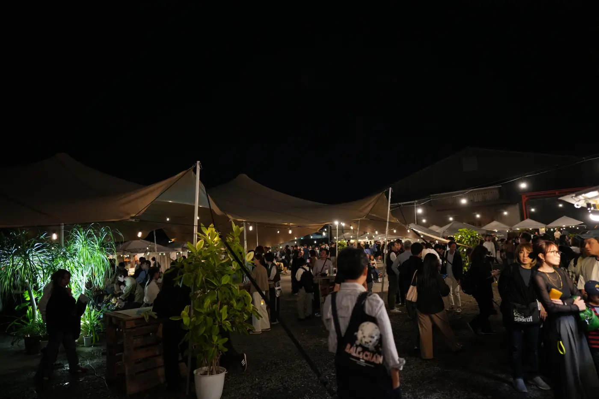

OVERVIEW
事例のまとめ
| イベント | 四日市BAURA（2025年10月19日、2026年10月4日） |
|---|---|
| 場所 | 三重県四日市市 |
| 主催 | 四日市まちづくり協議会 |
| テント | L サイズ（10m×20m）1張り、M サイズ（10m×8m）1張り |
| 色 | サンドキャメル |
| 使い方 | DJ ブースの屋根、休憩スペースの屋根 |
| 採用 | 2025年・2026年 |
DJ ブース：風の向きまで考えた張り方
メインの DJ ブースには、日よけ・雨よけ・風よけとしてストレッチテントを使いました。テントの前側を大きく開けて、ステージを囲むようにお客さまが集まれる空間に。後ろ側の布は地面近くまで下げ、後ろから風が入らないようにしました。風でレコードの針が飛ぶのを防ぐための工夫です。
布が伸び縮みするストレッチテントは、場所ごとに高さを変えて張れます。「前は開放的に、後ろはしっかり守る」という張り方ができるのは、ストレッチテントならではです。夜になると、テントの内側に照明の色が映り、布そのものがステージの演出になりました。
休憩スペース：夜まで人が集まる場所に
もう1張りは、来場者が座って食べたり話したりする休憩スペースの屋根にしました。木のパレットで作ったテーブルを並べ、テントの真ん中に付けた照明で植物を照らしています。暗くなってからも、テントの下だけが温かく光り、会場の中でいちばん人が集まる場所になりました。
選ばれた理由
決め手は、デザインでした。これまでの野外イベントでは、大きな業務用のテントがよく使われてきました。雨や日差しはしのげますが、どうしても「ファミリーイベントらしい」見た目になり、会場の雰囲気づくりまではできません。
四日市BAURA が目指したのは、音楽と食と夜の景色を楽しむ、大人も心が動く空間です。「このテントでないと、この雰囲気は出せない」と、2025年・2026年とストレッチテントを選んでいただきました。曲線を描く布のシルエットと、夜に照明を映す布の表情が、それ自体で会場の主役になります。
PHOTOS




FOR YOUR EVENT
こんなイベントにおすすめです。
- 夜まで続く野外イベント、夜市、マルシェ
- DJ やライブなど、音響機材を雨や風から守りたいステージ
- 工場跡地や広場など、屋根のない会場
会場の広さや地面、使い方をお聞かせください。似た条件の事例をもとに、テントの大きさと張り方をご提案します。あわせて サイズ・収容人数、設営の流れ、ほかの施工事例 もご覧ください。